پایگاه اطلاع رسانی شهدای ارتش
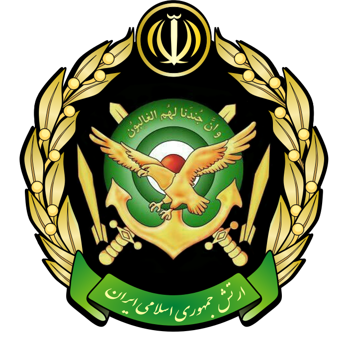
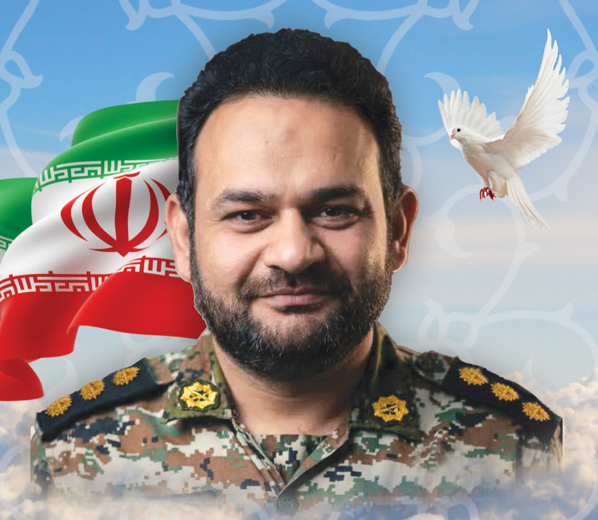
شهید سیدعلی توسلی طبائی زواره

زندگینامه شهید
سید علی توسلی مورخ 1365/02/17 در استان اصفهان، شهرستان زواره دیده به جهان گشود. بعد از طفولیت تحصیلات را تا سطح دیپلم در زادگاهش گذراند و سال 84 در رشته مهندسی هواپیما در دانشگاه شهید ستاری نهاجا پذیرفته شد و در تخصص پدافند هوایی موشک اس200 فارقالتحصیل و مدت 5 سال در بندر عباس خدمت میکرد. سپس به تهران منتقل و مدت 12 سال در سایت پدافند حسنآباد عهده دار مسئولیت بود. اسفند سال 1388 ازدواج نمود که ثمره آن 2 فرزند ذکور به نامهای سیدهادی و سیدمهدی و یک فرزند دختر به نام ریحانهسادات میباشد.
خصوصیات اخلاقی فردی خوشاخلاق، مردمدار، وقت شناس، احترام به پدر و مادر، تعهد به انجام وظایف شرعی، علاقهمند به فراگیری مهارتهای مختلف فرزندانش، علاقه وافر به مطالعه، اهمیت به صله رحم و غیره بود.
ایشان سال 1399 موفق به اخذ کارشناسی ارشد علوم سیاسی دانشگاه علامه طبابایی گردید و سرانجام در سال 1404 به سایت پدافند حضرت معصومه (س) منتقل گردید که فروردین 1405 در حمله ددمنشانه آمریکایی صهیونی درحالیکه در دفاع از میهن و پدافند منظریه قم بود به درجه رفیع شهادت نائل آمد. روحش شاد و یادش گرامی باد.

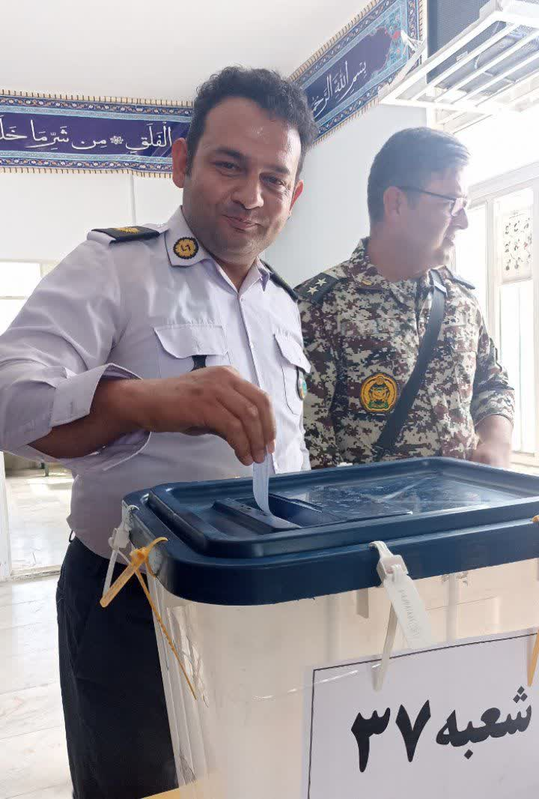
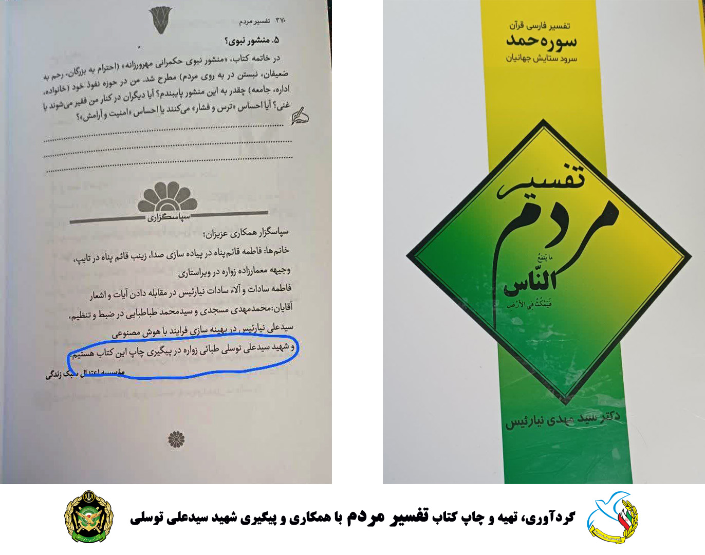
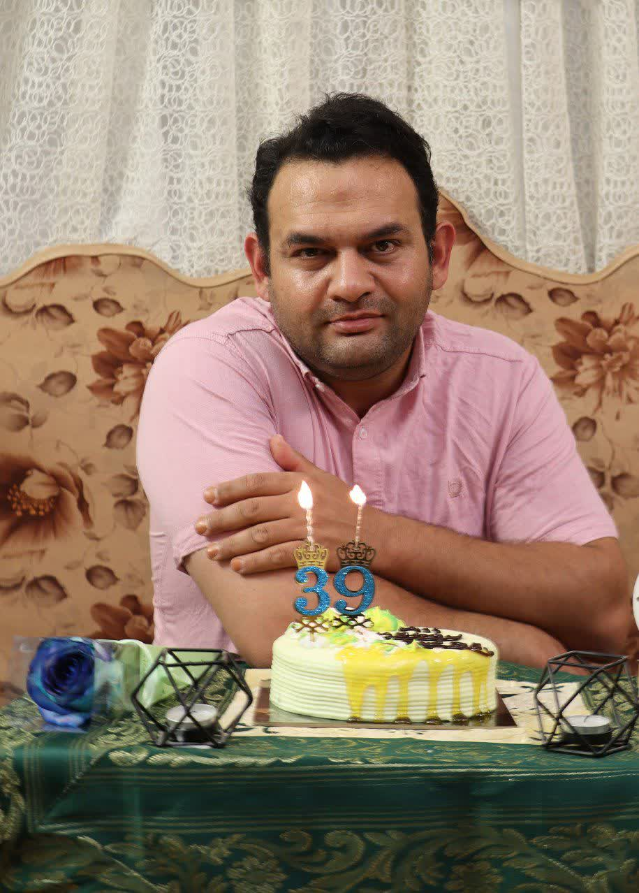
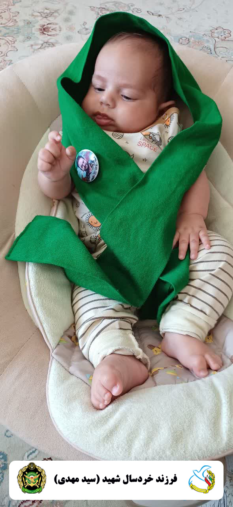
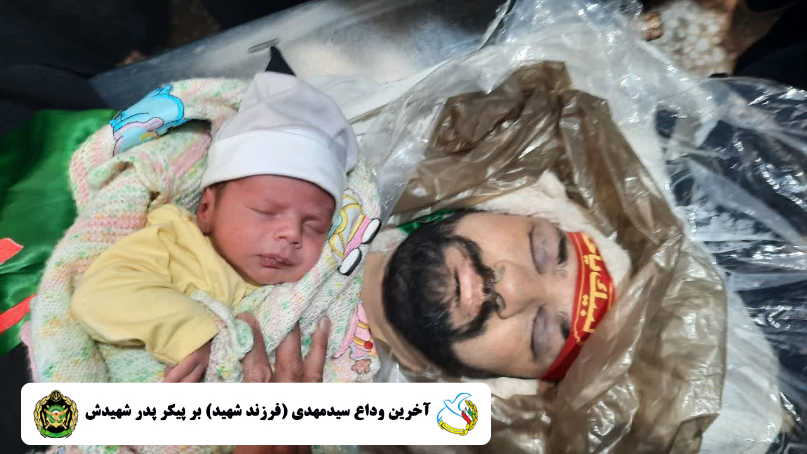
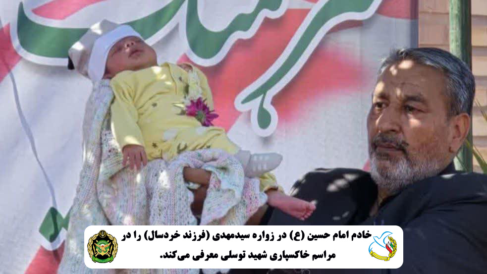
دلنوشته دختر شهید
سلام.
من ریحانه سادات توسلی فرزند شهید سید علی توسلی هستم. بابای من افسر شجاع پدافند نیروی هوایی ارتش جمهوری اسلامی ایران بود که در حمله هوایی ارتش صهیونیستی اسرائیل و آمریکا به شهادت رسید.
شهادت رهبر عزیزمان دل پدرم را غمگین ساخت و طبق وظیفهاش برای مقابله با آمریکا و اسرائیل آماده شد. در این حمله از بین همکاران نظامی، خداوند فقط پدر مرا برگزید. نمیدانم شاید چون چندین بار به مادرم گفته بود که دوست دارد شهید شود.
خدا هم دعایش را اجابت کرد.
من و هادی و مهدی که فقط ۲۳ روز داشت، شدیم فرزند شهید. بابای عزیزم اکنون که اینجا ایستادم به آسمان نگاه میکنم. جایی که تو در اوج هستی.
روزهای پیش با محبت همیشگی مرا به استقبال فردا میفرستادی ولی حالا که تو نیستی و از آن بالا به ما نگاه میکنی همه جا بوی خاطرات شیرین تو را میدهد.
میگفتی هر کس دختر ندارد معنی بابا شدن را نمیفهمد. دلم برای صدایت و محبتت و قصههایت و خیلی چیزهای دیگرت تنگ میشود.
و این دلتنگی به اندازه یک اقیانوس بیکران است که هر لحظه عمیقتر و بزرگتر میشود.
ولی باید یاد بگیرم مثل کوه استوار باشم و تسلیم نشوم. یقین دارم تو در کنار من و مادرم و برادرانم هستی. بابای خوبم دستهایت را روی شانههایم حس میکنم. قول میدهم راهت را با افتخار ادامه دهم.
و حجابم را رعایت کنم.
و نامت را در قلب ها زنده نگه دارم.
عزیزدلم شهادتت پایان راه نبود بلکه آغاز راهی بود که انشاالله به ظهور مولایمان حضرت ولی عصر متصل میشود.
به امید پیروزی اسلام و نابودی کامل آمریکا و اسرائیل جنایتکار. شادی روح شهیدان و امام شهدا صلوات.
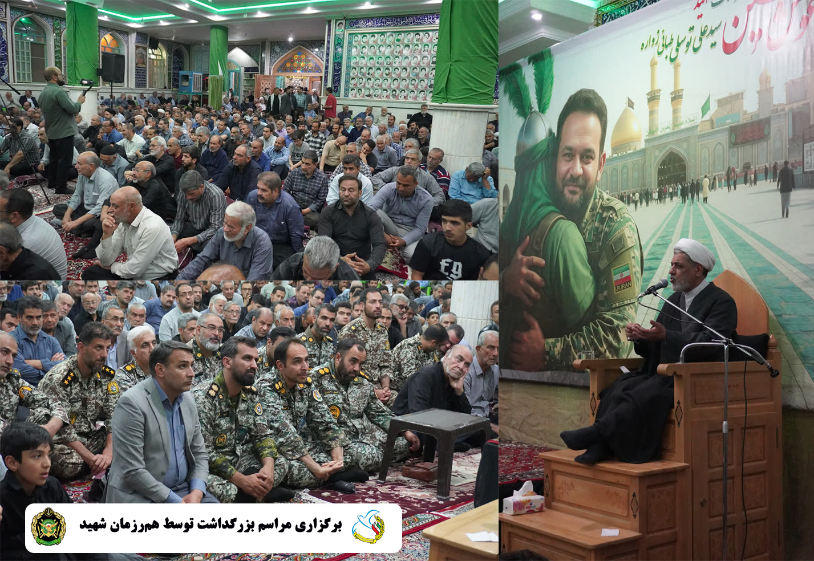
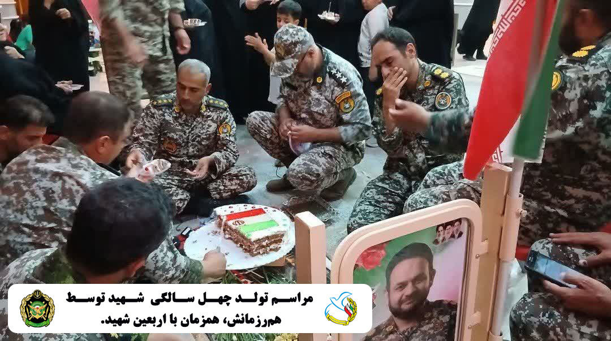
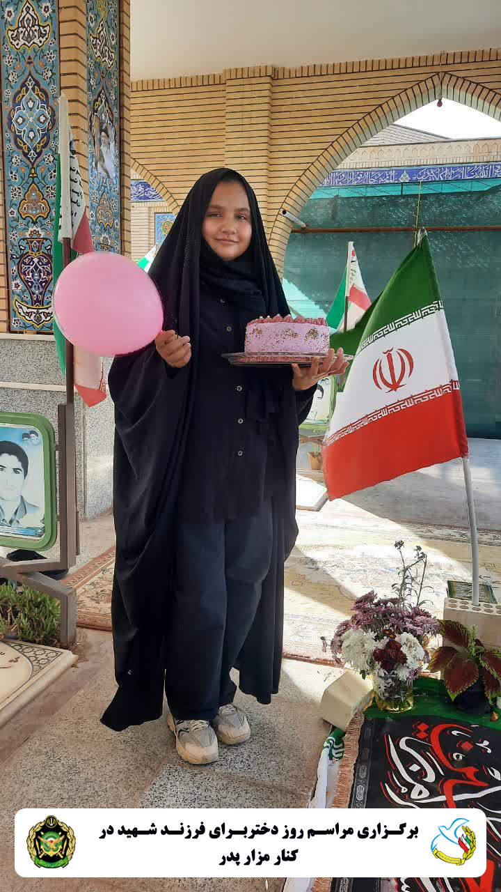
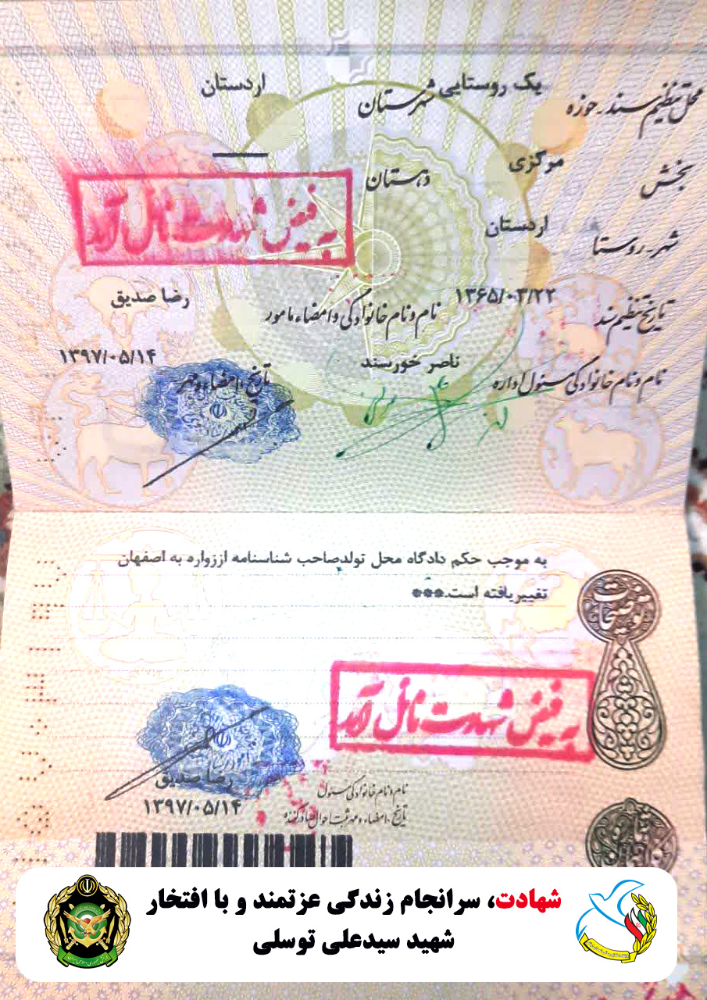
تقدیم به: شهیدسیدعلیتوسلی
ای مَرد
ای از جان گذشته در نَبَرد
ای وامدار کَربلا
ای مَرد ِمِیدان ِبلا
فرزند ِزَوّاره تویی
در عشق، آوازه تویی
مَرد ِبُرومند ِوَطَن
مَرد ِپَدآفند ِوَطَن
هَمنآم مولایت علی
سید علی تَوَسُلی
در دفتر ِآزادگان
نامت همیشه جآوِدان
شاعر: سیدجعفرجعفریاولیا